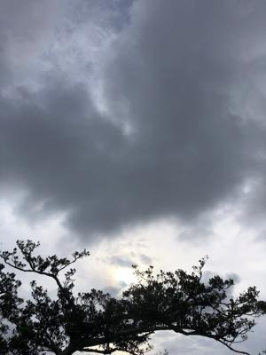
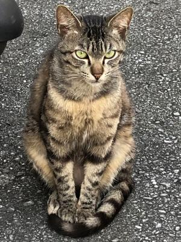
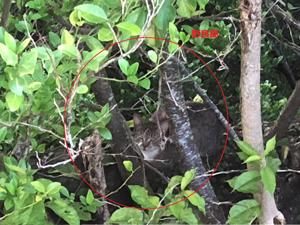

うるがいの話 ある日
最新: 猫【うるがいの話 ある日】とは 一日だけのプログです
『うるがいの話』の最新一日だけのプログで、通信料が少なく経済的だ。カニの画像をクリックすると全ての日付が載る『うるがいの話』サイトを表示します
|
|
【うるがいの話】 うるがい(ｳﾙｶﾞｲ urugai)とは、『もずくがに』の名前でとても大きくなります。 |
|---|---|
|
|
【カミマヤーの話】 猫のことを方言でマヤーといいます。カミマヤー（kamimayaa）とは、神の猫のことです。 |
|
【たながぁの音楽】 たながぁ（ﾀﾅｶﾞｰtanagaa）とは手長えびのことで、何種類かあり大きいのは車 エビぐらいになります。 |

|
【ぶながぁの話】 ぶながー(bunagaa)とは、赤い髪の毛、赤い身体、そして身長は１ｍ２０ｃｍ ぐらい、川の蟹を食べているの目撃された。場所は沖縄県国頭郡大宜味村のと ある村僕の隣近所に住んでいる爺さんから、聞いた話です。 |
|
|
【ギーマの話】 ギーマ(giima)とは、山原の里山に咲くスズランに似た、 花を付けます。実は食べられます、 気が付くと口の周りが紫になっています。 |
2022年05月10日 (火）猫
16:26
 
いつのまにか、裏庭に野良猫が居つくようになった。縄張りとして他の猫が近
づくと追い払っている。近所には猫が沢山いる、誰かが飼っているようだがハ
ッキリしない。家の中ではすまわせず外で餌をあげている、彼らが庭に糞をす
るので迷惑している。ヨメのお母さんは、恐らくマンションには戻ること出来
ないようだ。歩くことがますます困難になっている、そこでマンションにいる
猫はどうするのかとヨメと話す。もともと引き取った猫の保護している所に返
したらと思うのだが、それが出来ないとのこと。え！、と思ったが月６千円で
預かることは可能なようだが、ん～困ったもんだ。家で飼う事は絶対いやだし
と（分かっていたが）大きな問題が現実的な事になってきた。因みに写真は同
じ猫ではない。

１６時２０分 ビットコインの総資産 ￥１２、１１０↓
もとは、￥２０，０００ですよ
ネットではビットコイン、昨年(２０２１1)１１月のピークから５割下落と